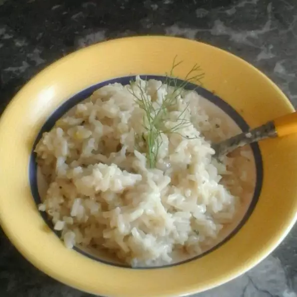

Fennel Risotto
Home

Don't let the strong taste of fennel scare you: it fades down after
cooking. This is a rich and creamy risotto, just like it ought to be! You
can use chicken stock in place of the vegetable stock, as well as olive
oil for the butter.
Approximate cooking time: 40 mins
Ingredients:
- 4 bulbs fennel
- 1 tablespoon butter
- 1 medium onion, chopped
- 2 cups uncooked Arborio rice
- 7 cups vegetable broth
- 1 cup heavy cream
- 6 tablespoons freshly grated Parmesan cheese
- 1 tablespoon dried parsley
- freshly ground black pepper to taste
Steps:
-
Cut the base off of the fennel bulbs, and cut a cone shape into the
base to remove the core. Slice the fennel vertically (lengthwise) into
1/4 inch thick slices.
-
Melt butter in a heavy-bottomed stock pot over medium heat. Cook
onions and fennel in butter for 2 minutes. Stir in the rice; cook for
another 2 minutes, stirring constantly, until lightly toasted. Stir in
1 cup vegetable broth; continue stirring until liquid is almost
completely absorbed. Repeat this process with remaining broth,
stirring constantly. Incorporating the broth should take 15 to 20
minutes in all.
-
Stir in cream, 3 tablespoons Parmesan and parsley, and cook until rice
is done and risotto is thick and creamy. Season to taste with black
pepper. Divide risotto among 6 bowls, and sprinkle with remaining
cheese.
Back